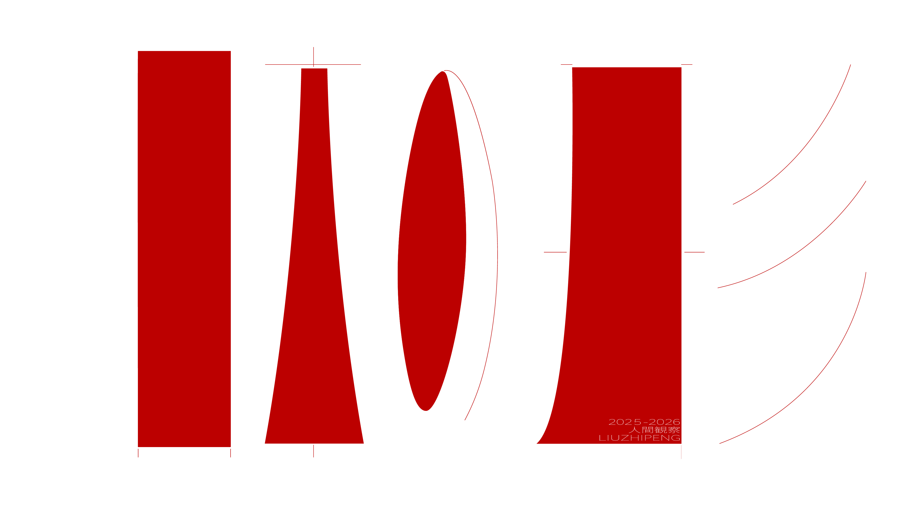
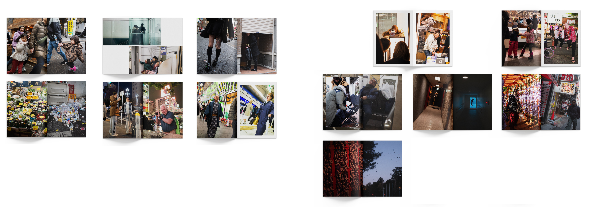

日本の形
2025.12
三年前，我来到日本。刚来的时候，并没有那种到了一个新地方特别兴奋的感觉，很快也就习惯了这里的生活。与其说是进入了一个完全不同的环境，对我来说更像只是换了一个地方生活。每天就这样很普通地过去，我也没有特别去想过，自己现在生活的这个地方到底是什么样的。
后来我有了一台可以随身带着的相机，开始在街上走的时候注意身边经过的人。每按下一次快门，就像记录下一个人在日本生活中的某个瞬间。拍得越来越多以后，我也开始重新去看这座城市。
慢慢地，我发现日本其实是一个很奇怪的地方。新的东西和旧的东西、整洁和杂乱，经常同时出现在一个画面里。街上可以看到推着婴儿车的年轻夫妻，也能看到已经七八十岁，却依然还在工作的人。外国人也越来越多，有来旅行的人，也有抱着某种期待来到日本生活的人。日本梦，是不是就是亚洲人的美国梦？
人与人之间好像一直存在着一些看不见的联系。单独看一张照片的时候可能不会觉得有什么，但当不同的照片被放在一起，这些原本没有关系的人和场景，反而会产生新的联系，出现一些意料之外的东西。
我觉得日本很有意思的一点就在这里。很多本来应该让人觉得违和的东西，就这样同时存在着。它们没有被整理成一个很统一的样子，但放在一起，却又很自然地成为了这里的日常。
在日本，很多充满违和感的风景，不知道为什么，最后都能很自然地成立...





© 2026 MADO DESIGN. ALL RIGHTS RESERVED.